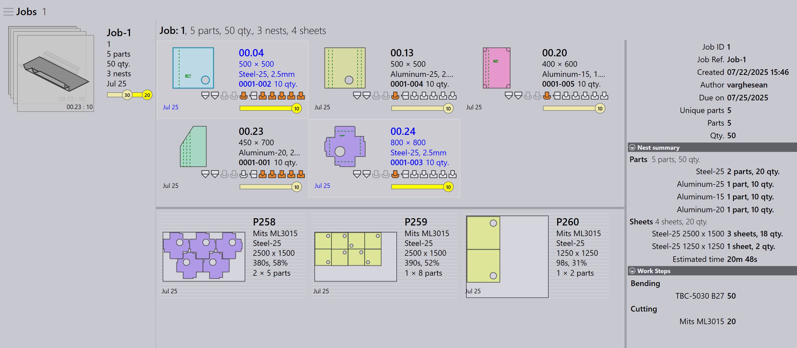

Automatické plánovanie
Automatické plánovanie automatizuje proces plánovania pre ohýbacie a rezacie operácie. Pomáha optimalizovať využitie strojov, znižovať plytvanie materiálom a efektívne riadiť priority prác.
Všeobecný pracovný postup je najprv naplánovať diely pre ohýbacie stroje a potom naplánovať diely pre rezacie stroje.
Plán ohýbania
Plán ohýbania definuje, ako sú diely rozdelené medzi dostupné ohýbacie stroje.
Príklad: Plán ohýbania pre 5 dielov (10 kusov každý).
-
Kliknite na možnosť Plánovať zákazku….
-
5 dielov (50 kusov) je priradených k TBC-5030 B27
-
Po plánovaní je stav práce aktualizovaný na Bend Planned pre celkovo 50 kusov. Pracovné kroky sú aktualizované s priradenými ohýbacími strojmi a množstvami dielov.


Plán rezania - ukladanie
Po pláne ohýbania sa vytvorí plán rezania ukladaním dielov na vhodné rezacie stroje. Existujú dva spôsoby ukladania:
Plan job for nest - práca
Použite Plánovať zákazku… na ukladanie všetkých dielov v práci spoločne. Motor ukladania automaticky spracuje všetky diely na základe priority práce, termínu dodania a materiálu. To je ideálne, keď chcete, aby bola celá práca uložená a odoslaná do radu rezania naraz.
-
Kliknite na Plánovať zákazku… a vyberte ľubovoľný stroj.
-
Spustí sa motor Pmonitor pre úlohu ukladania.
-
Motor rozdelí prácu podľa potreby na maximalizáciu využitia hárka.
| Nie je možné ukladať priradením špecifických materiálov špecifickým strojom. Napríklad nemôžete uložiť Material1 na Machine1 a Material2 na Machine2 v tej istej operácii. |

Tu je celá práca uložená do 5 hniezd na L49-3kw. Stav práce je aktualizovaný na 50 : Cutting Queue.
Plan part for nest - objednávka
Použite Plan Part pre ukladanie na úrovni objednávky — to znamená ukladanie iba vybraných dielov z práce. Typicky kliknete pravým tlačidlom na diel a vyberiete Same Material, takže iba diely s rovnakým materiálom sú zoskupené a uložené spoločne.
To je užitočné, keď chcete kontrolovať, ktoré diely sa ukladajú — napríklad diely z rovnakého materiálu alebo konkrétnej dávky.


-
Na stránke Job Detail kliknite pravým tlačidlom na ľubovoľný diel a vyberte Same Material. Všetky diely s rovnakým materiálom sú vybrané.
-
Kliknite na Plan Part… a vyberte stroj pre ukladanie.
-
Motor spracuje iba vybrané diely a vytvorí hniezda.

Tu je steel-25 uložená na Mits ML3015.